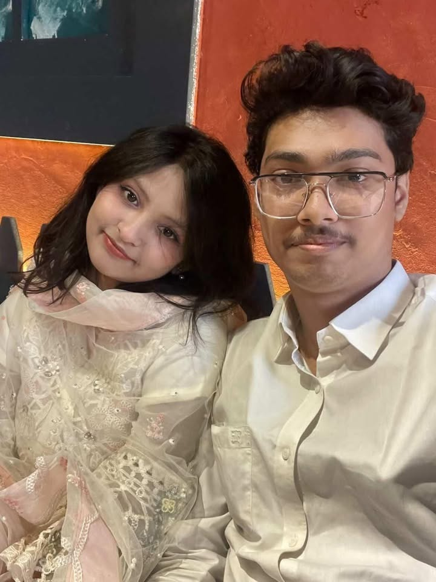
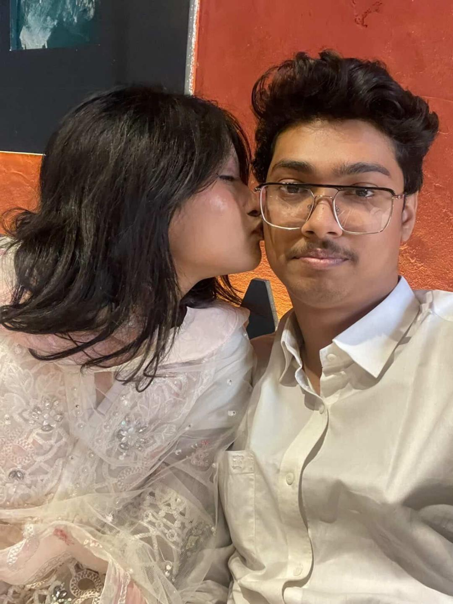
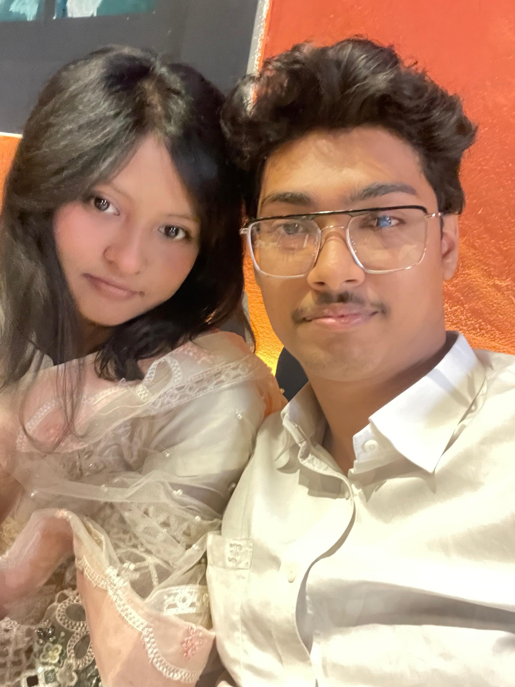

A collection of moments, smiles, memories and feelings. Every photograph here carries a small piece of Hassan Rubaiyat and Sanzida akter's life.

The day everything started. A simple moment that quietly became one of the most meaningful memories of my life.

Some photographs capture more than faces. They capture emotions, laughter and moments we never want to lose.

This picture reminds me that happiness is often hidden inside the smallest memories.
We have always been incredibly special to each other. In our hearts, we met long before we ever saw each other in person — our souls found each other on February 16, 2022. From that day on, we spent four years loving each other with unwavering loyalty, trust, and patience. Then, on February 10, 2026, our long-awaited dream finally came true when we met face to face for the very first time at Ghop Graveyard in Jessore. It wasn't just a meeting; it was the moment when years of love, countless emotions, and endless memories became real. That day will forever remain one of the most precious chapters of our storspec
The most special moments in our lives are the moments we spend together. Whenever we are with each other, even the simplest and most ordinary things become beautiful and meaningful. Being with the person you love has a way of turning every moment into something special. Among all our memories, meeting at night was one of the most beautiful and unforgettable experiences. The peace, happiness, and emotions we felt in those moments are beyond words. Every second we spent together became a precious memory that we will cherish forever. Hassan Rubaiyat Roddur loves Sanzida Akter more than words can ever express—more than yesterday, more than today, and more with every passing day. She is not only the love of his life but also the most beautiful part of his world, the reason behind his smiles, and the keeper of his heart.
Every moment we spend together becomes a beautiful memory, but the hugs we share and the kisses that express our love hold a very special place in our hearts. Those moments are not just gestures of affection; they are memories filled with love, warmth, comfort, and happiness. They remind us how deeply we care for each other and how lucky we are to have one another. Among all the memories in our journey, these precious moments will always remain some of the most cherished and unforgettable parts of our lives